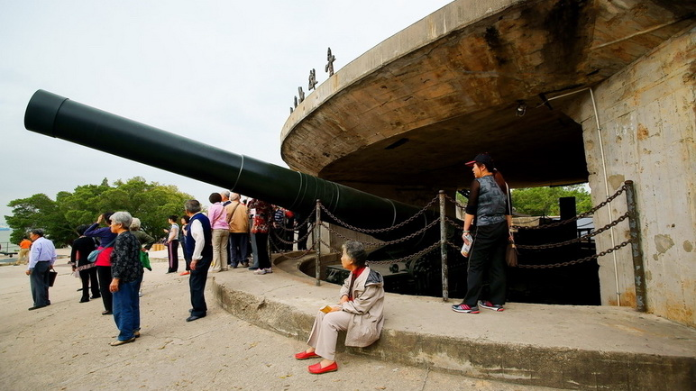
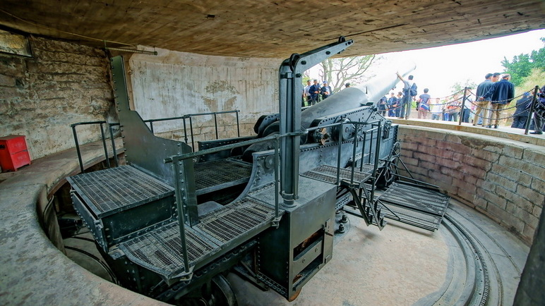

厦门胡里山炮台景区系国家级文物保护单位、全国AAAA级旅游景区，始建于清光绪二十年，总面积7万多平方米，城堡面积1.3万平方米，分为战坪区、兵营区和后山区，炮台结构为半地堡式、半城垣式，具有欧洲风格，又有我国明清时期的建筑神韵。胡里山炮台是中国洋务运动的产物，历史上被称为“八闽门户、天南锁钥”。
胡里山炮台的克虏伯大炮曾被鉴定为“世界现存原址上最古老最大的十九世纪海岸炮”,并荣获大世界基尼斯最佳项目奖。
近两年来，胡里山炮台深入挖掘历史文化内涵，打造了克虏伯大炮和红夷火炮操演两个核心品牌，“迎客仪式”表演、“牵手柜台”项目、高仿真机器人硅像馆、4D影院、幻影成像剧场、击沉日舰史料馆、光绪朝硃批奏折、独木成林等三十余个配套项目。
这些融新、奇、特、的平面、立体、静态和动态的文化旅游产品彻底改变了胡里山炮台景区曾经只有一门大炮的历史，丰富了景区产品结构和文化内涵，提升了景区旅游档次，使胡里山炮台成为一个“国内一流、国际知名”的文化旅游景点，每年接待中外游客突破一百七十万人次，成为了厦门旅游城市的名片和窗口，是一个集观光游览、历史文化体验为一体的主体性景区。
胡里山炮台地理位置独特，东面与金门岛隔海相望，南与漳州临海，西与鼓浪屿遥相辉映，北面是繁华市区。距高崎机场仅需二十分钟，距轮渡码头仅需十分钟，距火车站仅需十五分钟，交通十分便捷。
让我们一起领略古炮王雄姿、体验明清军事盛况，见证硝烟弥漫的历史。
厦门胡里山炮台，一个很值得游览的地方!
地址：厦门市思明区曾厝垵2号
电话：2574870
 330445074@qq.com
330445074@qq.com 12345
12345